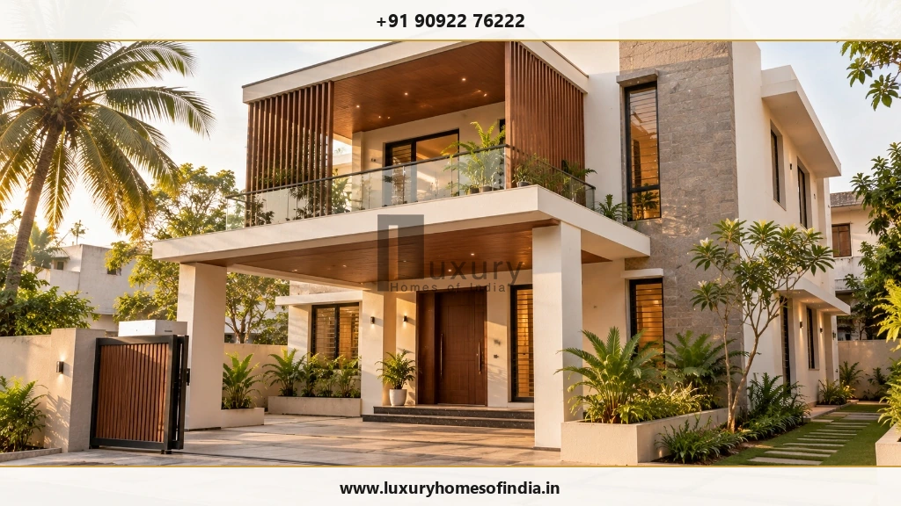
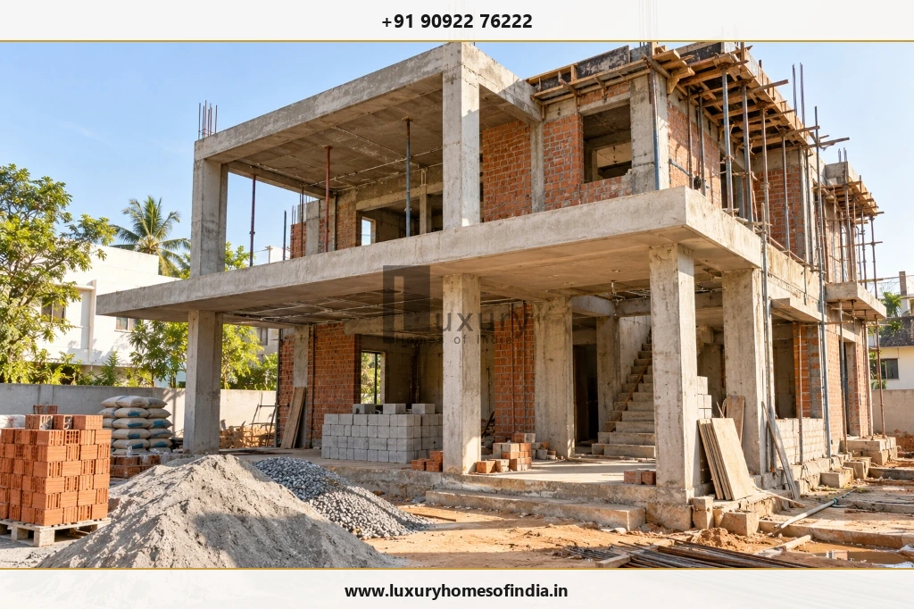

1. What Is Turnkey Construction?
Turnkey construction is a project delivery arrangement in which a contractor or construction company completes a defined scope of building work under an agreed contract. For residential construction, the objective is to coordinate the different activities required to deliver a usable home.
Depending on the contract, a turnkey project may include:
- Architectural planning and design coordination
- Structural engineering and construction drawings
- Quantity estimation and material planning
- Foundation and reinforced concrete construction
- Masonry, plastering and waterproofing
- Electrical and plumbing installations
- Flooring, doors, windows and painting
- Agreed interior finishing work
- Construction supervision and quality inspections
- Testing, rectification and handover documentation
The exact scope varies between providers and projects. Architectural design, statutory approval charges, compound walls, landscaping, modular kitchens and specialised systems may be included, offered separately or excluded.
For this reason, the signed proposal, BOQ (bill of quantities), technical specifications and contract should define what the contractor must deliver.
How does turnkey construction work?
The process begins with understanding the plot, the homeowner's requirements, the proposed built-up area and the intended level of finish. The design and technical requirements are then developed into a scope of work and cost estimate.
Once the proposal is agreed upon, construction activities, procurement, site coordination and inspections follow the project programme. The homeowner remains involved in approving important decisions, reviewing progress and authorising changes.
For homeowners considering Luxury Homes of India, the first step is to discuss the intended home and clarify which design, engineering, construction and finishing services are required for the project.
2. Why Consider Turnkey Construction in Chennai?
A coordinated construction arrangement can reduce the burden of managing multiple independent contractors. Its value depends on the clarity of responsibilities, the quality of planning and the effectiveness of site supervision.
One coordinated project arrangement
When the main construction activities are managed under one agreement, the homeowner has a clearer point of contact for the work covered by that contract.
Better visibility into the budget
A detailed BOQ and material schedule make it easier to understand the planned expenditure, compare quotations and identify items that may create additional costs.
Better coordination between design and execution
Architectural decisions affect structure, services, openings and finishes. Resolving these requirements before construction reaches the relevant stage can reduce avoidable rework.
Planned material procurement
A procurement schedule helps align material deliveries with construction activities. Product approvals, delivery lead times and substitutions should be documented.
More structured progress monitoring
A stage-wise construction programme creates a basis for reviewing planned progress, completed work and outstanding decisions.
A defined handover process
The agreement can establish how inspections, testing, defect rectification and project documentation will be handled before the home is handed over.
Turnkey construction does not automatically guarantee a lower cost, superior workmanship or faster completion. These outcomes depend on the project, the team and the contract.
3. What Is Included in Turnkey House Construction?
The principal construction stages may be covered by a turnkey package, but homeowners should confirm the extent of each item before signing.
| Work category | Items to confirm |
|---|---|
| Architectural design | Design development, drawings, revisions and deliverables |
| Structural engineering | Foundation design, structural drawings and engineering coordination |
| Site preparation | Setting out, excavation, soil information and site access assumptions |
| Foundation and structure | Concrete, reinforcement, formwork, columns, beams and slabs |
| Masonry and plastering | Wall materials, surface preparation and finish requirements |
| Waterproofing | Areas covered, system specifications, application and testing |
| Electrical installations | Wiring specifications, switchgear, points and distribution board |
| Plumbing | Water supply, drainage, piping and specified fixtures |
| Flooring and finishes | Material allowances, sizes, installation and finish quality |
| Doors and windows | Material, hardware, product range and installation |
| Painting | Surface preparation, coating system and number of specified coats |
| Site supervision | Reporting, inspections, coordination and issue resolution |
| Handover | Testing, agreed rectifications and required documentation |
This list is a planning guide, not a guarantee that all items are included in every quotation.
Why material specifications matter
A description such as “premium flooring” does not establish the exact product, purchase allowance or installation requirements. Similarly, “branded electrical materials” does not define the cable specification, rating or acceptable product range.
A useful material schedule identifies the relevant product category, technical requirements, brand or approved equivalent where appropriate, allowance and substitution process.
4. What Is Excluded from a Turnkey Construction Package?
An apparently comprehensive quotation may exclude important work. Before comparing proposals, ask the contractor to classify each significant item as included, allowance-based, optional or excluded.
Depending on the project and agreement, separately priced items may include:
- Statutory approval charges and professional fees
- Land purchase and legal due diligence
- Compound walls, gates and external paving
- Borewell, water storage and utility connections
- Underground drainage or septic arrangements where applicable
- Landscaping and external development
- Lifts, generators and solar installations
- Modular kitchens, wardrobes and appliances
- Bespoke carpentry and loose furniture
- Decorative ceilings and specialised lighting
- Smart-home, security and automation systems
- Demolition, unusual excavation or special foundation requirements
- Applicable taxes, deposits and other charges not included in the contract
The actual exclusions depend on the proposal and site requirements.
Four questions to ask before signing
- Is the item included in the contract price?
- If an allowance applies, what amount or specification does it cover?
- If the item is optional, how will its cost be determined?
- If excluded, who will arrange, coordinate and pay for it?
Written answers make it easier to establish the true project budget.
5. How Much Does Turnkey Construction Cost in Chennai?
The cost of turnkey house construction depends on the built-up area, site conditions, structural requirements, architectural complexity, material specifications and extent of finishing work.
A meaningful estimate should be based on the proposed drawings, quantities, specifications and contractual exclusions. An advertised per-square-foot rate is only a starting point if the scope behind that rate is unclear.
How to calculate an illustrative construction budget
A preliminary area-based estimate can be calculated using:
For example, using a hypothetical rate of ₹2,500 per sq. ft.:
| Built-up area | Hypothetical rate | Illustrative base estimate |
|---|---|---|
| 1,000 sq. ft. | ₹2,500/sq. ft. | ₹25,00,000 |
| 1,200 sq. ft. | ₹2,500/sq. ft. | ₹30,00,000 |
| 1,500 sq. ft. | ₹2,500/sq. ft. | ₹37,50,000 |
| 2,000 sq. ft. | ₹2,500/sq. ft. | ₹50,00,000 |
These are mathematical examples, not current Chennai market rates or LHI quotations. They do not establish which services, materials, taxes or external works are covered.
What can change the construction budget?
- Built-up area measurement: Confirm how staircases, balconies, covered parking and projections are measured.
- Site and foundation conditions: Soil information, access constraints, excavation and the required foundation design can affect the scope.
- Structural and architectural design: Large spans, double-height spaces, extensive glazing and complex forms may change engineering and execution requirements.
- Material selection: Flooring, sanitaryware, windows, doors, electrical fittings and finishes can produce substantial differences between proposals.
- Interior requirements: Modular kitchens, wardrobes, custom joinery, decorative lighting and automation may need separate allowances.
- External works: Compound walls, driveways, drainage, landscaping and utility connections may not be part of the base construction price.
How to compare two construction quotations
Compare the same built-up area, scope, specifications, allowances, exclusions, taxes, payment milestones and handover obligations. A lower rate is not necessarily better value if it covers fewer items or provides lower material allowances.
6. How Long Does Turnkey House Construction Take?
The construction programme depends on the size and complexity of the home, design finalisation, approvals, site conditions, material availability, weather and the pace of owner decisions.
Rather than relying on a general completion promise, ask for a project-specific programme with defined stages:
- Site assessment and design development
- Structural engineering and approval coordination
- Foundation and plinth work
- Structural frame and slab construction
- Masonry and concealed services
- Waterproofing and plastering
- Flooring, windows, doors and painting
- Fixtures, testing and rectification
- Final inspection and handover
The programme should identify dependencies, approval requirements, long-lead materials, owner decisions and the process for recording delays or variations.
A target completion date should be supported by the agreed scope, commencement conditions and contractual provisions. No general construction model guarantees on-time completion.
7. Turnkey Construction vs Labour Contract
The principal difference is how materials, coordination and construction responsibilities are allocated.
| Factor | Turnkey contract | Labour-only contract |
|---|---|---|
| Material procurement | Usually managed by the contractor for included items | Usually managed by the owner |
| Labour coordination | Contractor coordinates included activities | Owner or appointed manager coordinates |
| Material selection | Defined through agreed specifications and allowances | Owner typically purchases materials directly |
| Site management | As defined in the turnkey scope | Depends on the owner's arrangements |
| Owner involvement | Reviews and decisions remain necessary | Usually more procurement and coordination |
| Cost control | Depends on scope clarity and variation management | Depends on purchasing, quantities and labour control |
| Main consideration | Verify inclusions, exclusions and deliverables | Plan material supply, labour and trade sequencing |

A labour-only contract can suit an owner who wants direct purchasing control and can actively manage the project. Turnkey construction may suit an owner who prefers a more coordinated arrangement.
Neither model removes the need for technical oversight, documented specifications and progress checks.
8. How to Choose a Turnkey Construction Company in Chennai
The construction partner should be evaluated on technical capability, scope clarity, project coordination and contractual accountability—not just presentation or price.
1. Review relevant residential work
Ask to see completed projects comparable to your proposed home. Where access and permission are available, examine workmanship and speak with homeowners who are willing to share their experience.
2. Examine the quotation and BOQ
Confirm the area calculation, work scope, product specifications, allowances, exclusions and price basis.
3. Understand the technical process
Ask who prepares the architectural and structural drawings, coordinates electrical and plumbing layouts and resolves conflicts between design and execution.
4. Check the supervision arrangements
Clarify who coordinates site activities, how progress is reported, how inspections are recorded and how issues are escalated.
5. Understand the payment schedule
Payments should be linked to clearly defined milestones or measurable deliverables. Establish how completed work is verified before a payment becomes due.
6. Ask how changes are managed
The contract should explain how design changes, material substitutions and additional work are approved, priced and incorporated into the schedule.
7. Confirm handover responsibilities
Define the testing process, outstanding-work list, applicable warranties, rectification arrangements and documentation to be provided.
8. Review statutory responsibilities
Identify who prepares and coordinates approval documents and who pays applicable charges. Verify the relevant requirements for the specific plot and proposed building.
9. Important Clauses in a Turnkey Construction Agreement
A detailed written agreement reduces uncertainty for both parties.
Before signing, review these ten areas:
- 1. Project description: Plot details, drawings, scope and defined built-up area.
- 2. BOQ and specifications: Quantities, material descriptions, allowances, finish levels and acceptable substitutions.
- 3. Contract price: Price basis, taxes, payment conditions and treatment of excluded items.
- 4. Inclusions and exclusions: A clear list of contractor responsibilities and owner-supplied items.
- 5. Payment milestones: Measurable work stages and the process for verifying completion.
- 6. Construction schedule: Commencement conditions, milestones, target completion and permitted extensions.
- 7. Quality checks: Relevant inspections, testing, records and acceptance criteria.
- 8. Variations: Written approval of additional work, price changes and schedule implications.
- 9. Site responsibilities: Safety, access, material storage and protection of completed work.
- 10. Handover and defects: Testing, documentation, outstanding items, applicable warranties and rectification procedures.
For substantial projects, consider having the agreement reviewed by an appropriate legal or technical professional.
10. Common Mistakes to Avoid
- Choosing a package by its headline rate: Compare equivalent specifications and scope before deciding.
- Accepting vague material descriptions: Replace terms such as “standard quality” with measurable specifications or clearly defined product allowances.
- Leaving design decisions too late: Late changes can affect procurement, quantities, construction sequence and cost.
- Overlooking site-specific requirements: Confirm the available soil information, access conditions, drainage arrangements and foundation design requirements before finalising the construction scope.
- Paying without verifying milestones: Maintain records of completed work, inspections, approved changes and payments.
- Leaving handover until the end: Plan testing, rectification, documentation and closure of outstanding items as part of the contract.
11. Is Turnkey Construction Right for Your Home?
Turnkey construction may suit you if you:
- Prefer one coordinated construction engagement
- Have limited time to manage separate suppliers and trades
- Want the scope defined before work begins
- Value coordinated procurement and site supervision
- Are comfortable making timely decisions and reviewing progress
A labour-only or independently managed arrangement may be more appropriate if you want to purchase every material yourself, appoint individual trades directly and manage the daily coordination.
The best arrangement depends on your budget, availability, preferred level of involvement and confidence in the proposed construction partner.
12. Turnkey Construction with Luxury Homes of India
Luxury Homes of India positions its residential offering around turnkey villa construction, architectural planning, structural engineering and construction execution. These service areas are relevant to homeowners seeking a coordinated approach to building a new residence.
A useful first discussion should establish:
- The plot location and available site information
- The proposed built-up area and number of floors
- Architectural preferences and functional requirements
- Structural and building-services requirements
- Material specifications and desired finish levels
- Budget assumptions and BOQ requirements
- The expected project programme and approval responsibilities
- Quality checks, reporting and handover expectations
The scope should then be documented in a project-specific proposal, including applicable exclusions, allowances, payment milestones and delivery assumptions.
Explore Luxury Homes of India or use the LHI contact page to discuss your residential construction requirements.
The final scope, price and programme should be confirmed for the individual project.
Frequently Asked Questions
Conclusion
Turnkey construction in Chennai can simplify homebuilding by coordinating design, engineering, construction and finishing within a defined project arrangement. The value of that arrangement depends on the scope of work, technical planning, material specifications, project supervision and contractual clarity.
Before appointing a construction partner, compare the BOQ, inclusions, exclusions, payment schedule, programme and handover responsibilities. These details provide a more reliable basis for evaluating proposals than the word “turnkey” or a headline rate alone.
Planning to build a home in Chennai? Contact Luxury Homes of India to discuss your requirements and the information needed for a project-specific construction proposal.